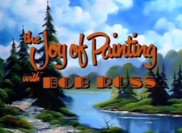
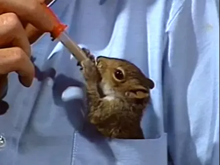

The Joy of Painting is an American half-hour instructional television show. Created and hosted by painter Bob Ross, it ran from January 11, 1983, to May 17, 1994. In most episodes, Ross taught techniques for landscape oil painting, completing a painting in each session. Occasionally, episodes featured a guest artist who would demonstrate a different painting technique.

The show was aired and produced by non-commercial, public television stations.
Ross ran the show until his death in 1994 and in 2022, Joan Kowalski, an executive at Ross' holding company and daughter of business partners Walt and Annette Kowalski, and WDSC-TV commissioned a pilot based on a painting that was unfinished for a 32nd season that was planned when Ross died before production began. Bob Ross Art Workshop and Gallery instructor Nicholas Hankins hosted the pilot, which was so well-received that a full 13-episode run was filmed in March and June 2023. In December 2024, Hankins posted on Instagram that a 33rd season has been commissioned by WDSC, and began to be broadcast in the summer of 2025.

At the beginning of each episode, the canvas was blank. Most episodes would begin with either a blank white canvas, or less often, a canvas pre-painted with black gesso; this blank canvas would be coated with a thin coat of liquid white paint. Every episode would be half an hour long. For shorter paintings, Ross would fill time by showing off animals such as his pet squirrel Peapod or videos of him at a nature preserve, or footage of Ross at a public event. During the course of an episode Ross would turn the blank canvas into a landscape, seascape and winter scenery, using the wet-on-wet technique, in which the painter adds still-wet paint, rather than waiting for each layer of paint to dry.

The show featured many guest appearances from other painters, who painted in Ross's stead, such as Dana Jester, Ross's son Steve, John Thamm, Audrey Golden, Joyce Ortner, Ben Stahl, Dorothy Dent, his business partner Annette Kowalski (who specialized in floral painting), Ferne Sirois and Diane Andre.